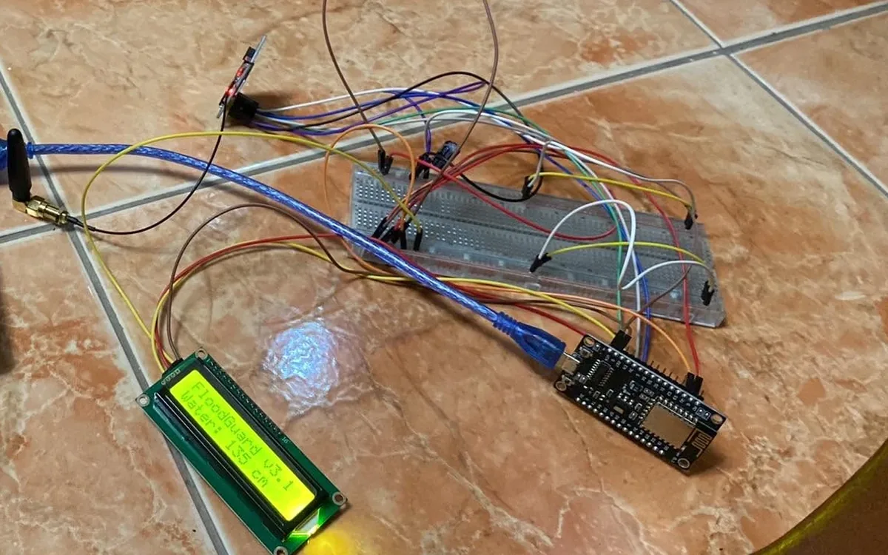
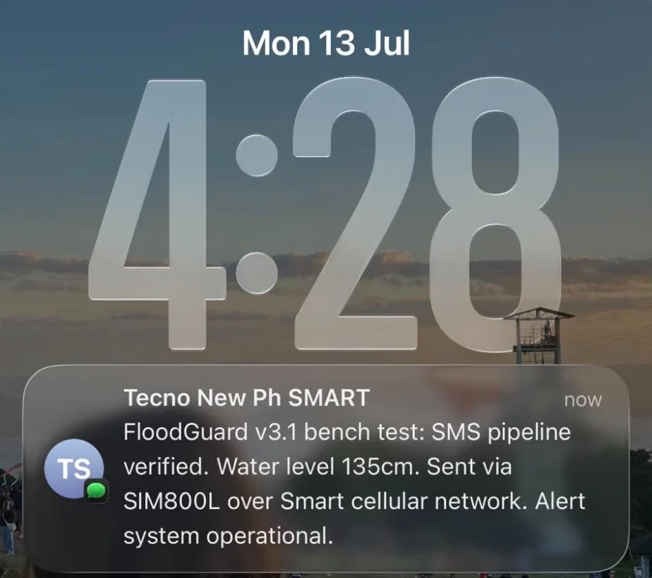
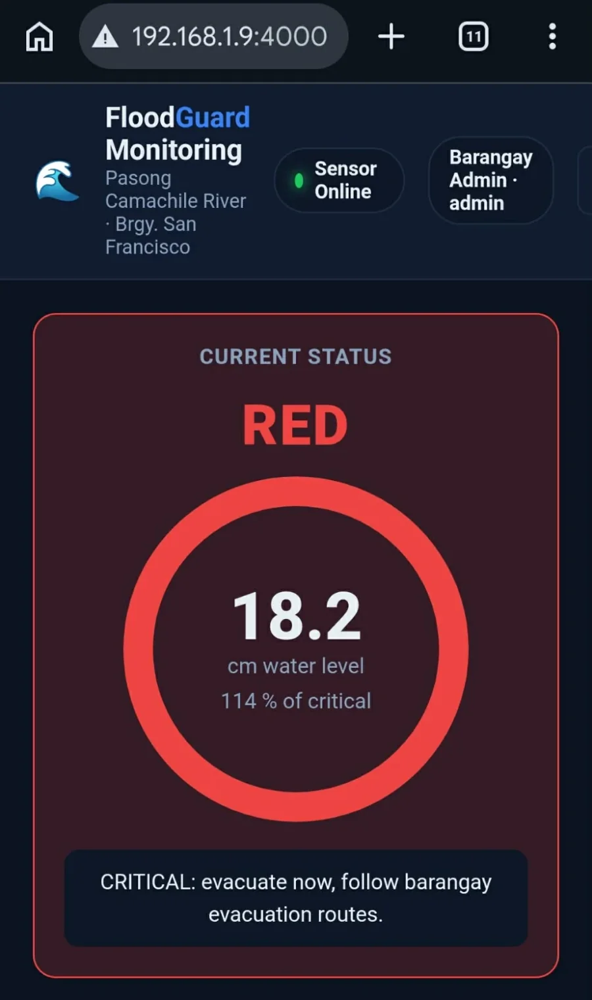

floodguard/
Our capstone: a flood early-warning system for the Municipality of Noveleta, Cavite. A sensor watches the water level, and when it rises past a threshold the warning goes out by SMS, because a text message reaches people who are not watching a dashboard. I lead the team.

A warning nobody sees is not a warning
Noveleta floods. A monitoring dashboard is useful to the office that watches it, but the people who most need to know the water is rising are the ones asleep, out, or without data. So the output of this system is not a chart. It is a text message, sent over the ordinary cellular network, to a phone that does not need an app or an internet connection to receive it.
Sensor to LCD to a real phone
- A NodeMCU board reads the water level and shows it on a 16x2 LCD.
- A SIM800L GSM module sends the alert as an SMS over the Smart cellular network. On 13 July 2026 the bench test delivered to a real phone, then sent again five minutes later to show the pipeline holds up on repeat.
- A web dashboard shows the live reading against a critical threshold, turns red when the level crosses it with an instruction to evacuate, and plots the recent trend. It sits behind a login, with a barangay administrator role.


Where it actually stands
This is a prototype on a bench, not a deployed system. The readings in these pictures are test values, the dashboard is running on a local network rather than the internet, and nothing is installed at a river yet. The prediction half of the capstone is part of the plan and is not shown here, so this page makes no claim about it. What has been shown is the part that has to work before anything else matters: a reading becomes a text message on a real phone, over a real network.